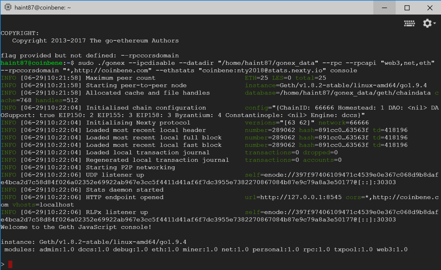
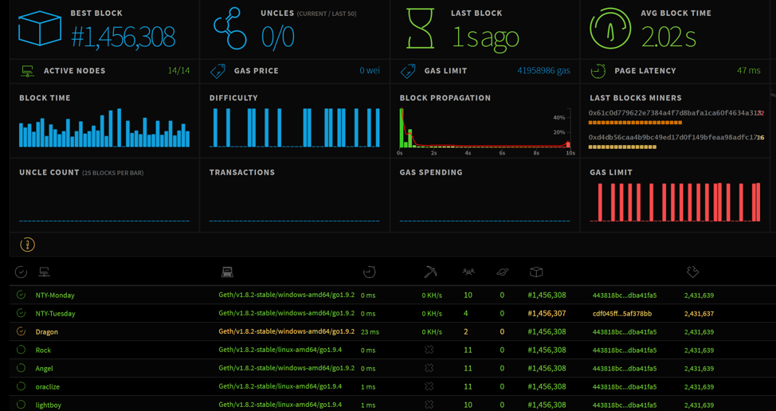
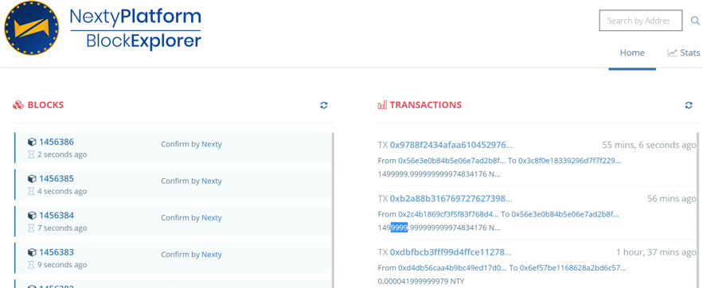

Run as a node¶
Run gonex¶
All basic configuration parameters were set when launching the file gonex.exe, but you need running as following below configuration for the stable system:
Window:
> gonex --datadir "C:\gonex\data" --rpc --rpcapi "web3,net,eth" --rpccorsdomain "*,https://vnbig.com" --ethstats "vnbig:nty2018@stats.nexty.io" console
Linux:
> sudo ./gonex --datadir "/home/{user_name}/gonex_data" --rpc --rpcapi "web3,net,eth" --rpccorsdomain "*, https://vnbig.com" --ethstats " vnbig:nty2018@stats.nexty.io" console
Connection peers¶
By default, gonex will automatically connect to other peers in the nexty network (connection time is 2-10 minutes or faster), but in case it is blocked by firewall or other policies, you can manual connect to other peers by command are as follows:
Add node manual by command:
> admin.addPeer("enode://debd38f626a17ba5a40b39dd67cfc56467edb86ec4c5b492a63e4defa6487fabf588709d455942cd4914d44cfc1a7fb9ff2dccd1166667620fd68d16453fb846@139.99.96.126:30303")
> admin.addPeer("enode://45d628d87f60675c900c8f00dd6761c36d830285c29a8993b1c7ec79cfa882a8ce5d60bd7aaa477f06e6f261170007110c1da1e3693cc8b4fd5422f1b5a23af1@13.228.68.50:30303")
> admin.addPeer("enode://232ff8df082c7ea2f25915bd78515d987d53b804989763575ce3f0693688482a3eba210ccdf7dec66d78a6978dd214a07048dac7878b84b901b8ad5d334afc4d@13.229.161.231:30303")
> admin.addPeer("enode://48de197e14f60aa43dd40450533e3006b13f36aae95b898ab8078becee99767904ece6db86b85e94bd22495988efae43f2d663f6110fc51e4d0f093621094bcd@13.251.24.88:30303")
> admin.addPeer("enode://5eec3d1256b3989e3bba0bb35690148fc1378d3d3fe27838ca6de04d9a880304af312c612bd25c89dd0cc8cfcdf5f8186c0f5a69f5cfe3a068330166661b431a@35.186.147.119:30303")
> admin.addPeer("enode://eb74bcb909db025d60dd06151e608867bc5ffda454a4e13568867d2635ac481a49aea7f1b1a0845b71b2363d385394291e983489e6c52fcba5ee603cb0178555@35.197.153.143:30303")
> admin.addPeer("enode://374fd3c0eec3e279122ad87bbc4bb729c055a42e7ce7b3988b55101a9b419aef5ba55d0727ec336fac3e64cd3ae5cb49d44404c463981db6b5bde6de12265aad@35.198.202.233:30303")
> admin.addPeer("enode://399a27c102949a776e0e0ec12f559fca18e2b4044af3f8180a0f1fb5bcaa293b894d020f5742175422341a0f38c53e12adec286fe654db10ce11ade97cd06943@35.197.133.117:30303")
Add node by config file:
You can configure permanent static nodes by putting something like the following into file <datadir>/static-nodes.json (eg: Window: C:\Gonex\data\static-nodes.json; Linux: /home/{user}/gonex_data/), run gonex again.
> [“enode://debd38f626a17ba5a40b39dd67cfc56467edb86ec4c5b492a63e4defa6487fabf588709d455942cd4914d44cfc1a7fb9ff2dccd1166667620fd68d16453fb846@139.99.96.126:30303",
"enode://45d628d87f60675c900c8f00dd6761c36d830285c29a8993b1c7ec79cfa882a8ce5d60bd7aaa477f06e6f261170007110c1da1e3693cc8b4fd5422f1b5a23af1@13.228.68.50:30303",
"enode://48de197e14f60aa43dd40450533e3006b13f36aae95b898ab8078becee99767904ece6db86b85e94bd22495988efae43f2d663f6110fc51e4d0f093621094bcd@13.251.24.88:30303",
"enode://5eec3d1256b3989e3bba0bb35690148fc1378d3d3fe27838ca6de04d9a880304af312c612bd25c89dd0cc8cfcdf5f8186c0f5a69f5cfe3a068330166661b431a@35.186.147.119:30303",
"enode://eb74bcb909db025d60dd06151e608867bc5ffda454a4e13568867d2635ac481a49aea7f1b1a0845b71b2363d385394291e983489e6c52fcba5ee603cb0178555@35.197.153.143:30303",
"enode://374fd3c0eec3e279122ad87bbc4bb729c055a42e7ce7b3988b55101a9b419aef5ba55d0727ec336fac3e64cd3ae5cb49d44404c463981db6b5bde6de12265aad@35.198.202.233:30303",
"enode://399a27c102949a776e0e0ec12f559fca18e2b4044af3f8180a0f1fb5bcaa293b894d020f5742175422341a0f38c53e12adec286fe654db10ce11ade97cd06943@35.197.133.117:30303"]
Access Stats (stats.nexty.io)¶
Check your node by nodename on brower:
Access Explorer (explorer.nexty.io)¶
API¶
eth_sendTransaction
Creates new message call transaction or a contract creation, if the data field contains code.
Parameters
Object - The transaction object
from: DATA, 20 Bytes - The address the transaction is send from.
to: DATA, 20 Bytes - (optional when creating new contract) The address the transaction is directed to.
gas: QUANTITY - (optional, default: 90000) Integer of the gas provided for the transaction execution. It will return unused gas.
gasPrice: QUANTITY - (optional, default: To-Be-Determined) Integer of the gasPrice used for each paid gas
value: QUANTITY - (optional) Integer of the value sent with this transaction
data: DATA - The compiled code of a contract OR the hash of the invoked method signature and encoded parameters.
nonce: QUANTITY - (optional) Integer of a nonce. This allows to overwrite your own pending transactions that use the same nonce.
> params: [{
"from": "0xb60e8dd61c5d32be8058bb8eb970870f07233155",
"to": "0xd46e8dd67c5d32be8058bb8eb970870f07244567",
"gas": "0x76c0", // 30400
"gasPrice": "0x9184e72a000", // 10000000000000
"value": "0x9184e72a", // 2441406250
"data": "0xd46e8dd67c5d32be8d46e8dd67c5d32be8058bb8eb970870f072445675058bb8eb970870f072445675"
}]
Returns
DATA, 32 Bytes - the transaction hash, or the zero hash if the transaction is not yet available.
Example
> curl -X POST --data '{"jsonrpc":"2.0","method":"eth_sendTransaction","params":[{see above}],"id":1}'
> {"id":1,
"jsonrpc": "2.0",
"result": "0xe670ec64341771606e55d6b4ca35a1a6b75ee3d5145a99d05921026d1527331"}
eth_sendRawTransaction
Creates new message call transaction for signed transactions.
Parameters
DATA, The signed transaction data.
> params: ["0xd46e8dd67c5d32be8d46e8dd67c5d32be8058bb8eb970870f072445675058bb8eb970870f072445675"]
Returns
DATA, 32 Bytes - the transaction hash, or the zero hash if the transaction is not yet available.
Example
> curl -X POST --data '{"jsonrpc":"2.0","method":"eth_sendRawTransaction","params":[{see above}],"id":1}'
> {
"id":1,
"jsonrpc": "2.0",
"result": "0xe670ec64341771606e55d6b4ca35a1a6b75ee3d5145a99d05921026d1527331"
}
eth_getBlockByHash
Returns information about a block by hash.
- Parameters
DATA, 32 Bytes - Hash of a block.
Boolean - If true it returns the full transaction objects, if false only the hashes of the transactions.
> params: [
'0xe670ec64341771606e55d6b4ca35a1a6b75ee3d5145a99d05921026d1527331',
true
]
Returns
- Object - A block object, or null when no block was found:
number:QUANTITY - the block number. null when its pending block.hash:DATA, 32 Bytes - hash of the block. null when its pending block.parentHashDATA, 32 Bytes - hash of the parent block.nonce:DATA, 8 Bytes - hash of the generated proof-of-work. null when its pending block.sha3Uncles:DATA, 32 Bytes - SHA3 of the uncles data in the block.logsBloom:DATA, 256 Bytes - the bloom filter for the logs of the block. null when its pending block.transactionsRoot:DATA, 32 Bytes - the root of the transaction trie of the block.stateRoot:DATA, 32 Bytes - the root of the final state trie of the block.receiptsRoot:DATA, 32 Bytes - the root of the receipts trie of the block.miner:DATA, 20 Bytes - the address of the beneficiary to whom the mining rewards were given.difficulty:QUANTITY - integer of the difficulty for this block.totalDifficulty:QUANTITY - integer of the total difficulty of the chain until this block.extraData:DATA - the “extra data” field of this block.size:QUANTITY - integer the size of this block in bytes.gasLimit:QUANTITY - the maximum gas allowed in this block.gasUsed:QUANTITY - the total used gas by all transactions in this block.timestamp:QUANTITY - the unix timestamp for when the block was collated.transactions:Array - Array of transaction objects, or 32 Bytes transaction hashes depending on the last given parameter.uncles:Array - Array of uncle hashes.
Example
Request
> curl -X POST --data '{"jsonrpc":"2.0","method":"eth_getBlockByHash","params":["0xe670ec64341771606e55d6b4ca35a1a6b75ee3d5145a99d05921026d1527331", true],"id":1}'
Result
> {
"id":1,
"jsonrpc":"2.0",
"result": {
"number": "0x1b4", // 436
"hash": "0xe670ec64341771606e55d6b4ca35a1a6b75ee3d5145a99d05921026d1527331",
"parentHash": "0x9646252be9520f6e71339a8df9c55e4d7619deeb018d2a3f2d21fc165dde5eb5",
"nonce": "0xe04d296d2460cfb8472af2c5fd05b5a214109c25688d3704aed5484f9a7792f2",
"sha3Uncles": "0x1dcc4de8dec75d7aab85b567b6ccd41ad312451b948a7413f0a142fd40d49347",
"logsBloom": "0xe670ec64341771606e55d6b4ca35a1a6b75ee3d5145a99d05921026d1527331",
"transactionsRoot": "0x56e81f171bcc55a6ff8345e692c0f86e5b48e01b996cadc001622fb5e363b421",
"stateRoot": "0xd5855eb08b3387c0af375e9cdb6acfc05eb8f519e419b874b6ff2ffda7ed1dff",
"miner": "0x4e65fda2159562a496f9f3522f89122a3088497a",
"difficulty": "0x027f07", // 163591
"totalDifficulty": "0x027f07", // 163591
"extraData": "0x0000000000000000000000000000000000000000000000000000000000000000",
"size": "0x027f07", // 163591
"gasLimit": "0x9f759", // 653145
"gasUsed": "0x9f759", // 653145
"timestamp": "0x54e34e8e" // 1424182926
"transactions": [{...},{ ... }]
"uncles": ["0x1606e5...", "0xd5145a9..."]
}
}
eth_getBlockByNumber
Returns information about a block by block number.
- Parameters
QUANTITY|TAG - integer of a block number, or the string “earliest”, “latest” or “pending”, as in the default block parameter.
Boolean - If true it returns the full transaction objects, if false only the hashes of the transactions.
> params: [
'0x1b4', // 436
true
]
Returns
See eth_getBlockByHash
Example
Request
> curl -X POST --data '{"jsonrpc":"2.0","method":"eth_getBlockByNumber","params":["0x1b4", true],"id":1}'
Result
see eth_getBlockByHash
eth_getTransactionCount
Returns the number of transactions sent from an address.
- Parameters
DATA, 20 Bytes - address.
QUANTITY|TAG - integer block number, or the string “latest”, “earliest” or “pending”, see the default block parameter
> params: [
'0x407d73d8a49eeb85d32cf465507dd71d507100c1',
'latest' // state at the latest block
]
Returns
QUANTITY - integer of the number of transactions send from this address.
Example
> curl -X POST --data '{"jsonrpc":"2.0","method":"eth_getTransactionCount","params":["0x407d73d8a49eeb85d32cf465507dd71d507100c1","latest"],"id":1}'
> {
"id":1,
"jsonrpc": "2.0",
"result": "0x1" // 1
}
eth_blockNumber
Returns the number of most recent block.
Parameters
[none]
Returns
QUANTITY - integer of the current block number the client is on.
Example
> curl -X POST --data '{"jsonrpc":"2.0","method":"eth_blockNumber","params":[],"id":83}'
> {
"id":83,
"jsonrpc": "2.0",
"result": "0x4b7" // 1207
}
eth_getBalance
Returns the balance of the account of given address.
- Parameters
DATA, 20 Bytes - address to check for balance.
QUANTITY|TAG - integer block number, or the string “latest”, “earliest” or “pending”, see the default block parameter
> params: [
'0x407d73d8a49eeb85d32cf465507dd71d507100c1',
'latest'
]
Returns
QUANTITY - integer of the current balance in wei.
Example
> curl -X POST --data '{"jsonrpc":"2.0","method":"eth_getBalance","params":["0x407d73d8a49eeb85d32cf465507dd71d507100c1", "latest"],"id":1}'
> {
"id":1,
"jsonrpc": "2.0",
"result": "0x0234c8a3397aab58" // 158972490234375000
}
The default block parameter
The following methods have an extra default block parameter:
eth_getBalance
eth_getCode
eth_getTransactionCount
When requests are made that act on the state of ethereum, the last default block parameter determines the height of the block. The following options are possible for the defaultBlock parameter:
HEX String - an integer block number
String “earliest” for the earliest/genesis block
String “latest” - for the latest mined block
String “pending” - for the pending state/transactions
Web3¶
Create new wallet
Keythereum is a JavaScript tool to generate, import and export Ethereum keys. This provides a simple way to use the same account locally and in web wallets. It can be used for verifiable cold storage wallets.
Keythereum uses the same key derivation functions (PBKDF2-SHA256 or scrypt), symmetric ciphers (AES-128-CTR or AES-128-CBC), and message authentication codes as nexty. You can export your generated key to file, copy it to your data directory’s keystore, and immediately start using it in your local Ethereum client.
For detail see https://github.com/ethereumjs/keythereum
web3.eth.sendTransaction
web3.eth.sendTransaction(transactionObject [, callback])
Sends a transaction to the network.
Parameters
Object - The transaction object to send:
from:String - The address for the sending account.to:String - (optional) The destination address of the message, left undefined for a contract-creation transaction.value:Number|String|BigNumber - (optional) The value transferred for the transaction in Wei, also the endowment if it’s a contract-creation transaction.gas:Number|String|BigNumber - (optional, default: To-Be-Determined) The amount of gas to use for the transaction (unused gas is refunded).gasPrice:Number|String|BigNumber - (optional, default: To-Be-Determined) The price of gas for this transaction in wei, defaults to the mean network gas price.data:String - (optional) Either a byte string containing the associated data of the message, or in the case of a contract-creation transaction, the initialisation code.nonce:Number - (optional) Integer of a nonce. This allows to overwrite your own pending transactions that use the same nonce.
Function - (optional) If you pass a callback the HTTP request is made asynchronous. See this note for details.
Returns
String - The 32 Bytes transaction hash as HEX string.
Example
// compiled solidity source code using https://chriseth.github.io/cpp-ethereum/
> var code = "603d80600c6000396000f3007c01000000000000000000000000000000000000000000000000000000006000350463c6888fa18114602d57005b6007600435028060005260206000f3";
web3.eth.sendTransaction({data: code}, function(err, transactionHash) {
if (!err)
console.log(transactionHash); // "0x7f9fade1c0d57a7af66ab4ead7c2eb7b11a91385"
});
web3.eth.sendRawTransaction
web3.eth.sendRawTransaction(signedTransactionData [, callback])
Parameters
String - Signed transaction data in HEX format
Function - (optional) If you pass a callback the HTTP request is made asynchronous.
Returns
String - The 32 Bytes transaction hash as HEX string.
Example
> var Tx = require('ethereumjs-tx');
var privateKey = new Buffer('e331b6d69882b4cb4ea581d88e0b604039a3de5967688d3dcffdd2270c0fd109', 'hex')
var rawTx = {
nonce: '0x00',
gasPrice: '0x09184e72a000',
gasLimit: '0x2710',
to: '0x0000000000000000000000000000000000000000',
value: '0x00',
data: '0x7f7465737432000000000000000000000000000000000000000000000000000000600057'
}
var tx = new Tx(rawTx);
tx.sign(privateKey);
var serializedTx = tx.serialize();
//console.log(serializedTx.toString('hex'));
//f889808609184e72a00082271094000000000000000000000000000000000000000080a47f74657374320000000000000000000000000000000000000000000000000000006000571ca08a8bbf888cfa37bbf0bb965423625641fc956967b81d12e23709cead01446075a01ce999b56a8a88504be365442ea61239198e23d1fce7d00fcfc5cd3b44b7215f
web3.eth.sendRawTransaction('0x' + serializedTx.toString('hex'), function(err, hash) {
if (!err)
console.log(hash); // "0x7f9fade1c0d57a7af66ab4ead79fade1c0d57a7af66ab4ead7c2c2eb7b11a91385"
});
web3.eth.sign
web3.eth.sign(address, dataToSign, [, callback])
Signs data from a specific account. This account needs to be unlocked.
- Parameters
String - Address to sign with.
String - Data to sign.
Function - (optional) If you pass a callback the HTTP request is made asynchronous.
Returns
String - The signed data.
Example
> var result = web3.eth.sign("0x135a7de83802408321b74c322f8558db1679ac20",
"0x9dd2c369a187b4e6b9c402f030e50743e619301ea62aa4c0737d4ef7e10a3d49"); // second argument is web3.sha3("xyz")
console.log(result); // "0x30755ed65396facf86c53e6217c52b4daebe72aa4941d89635409de4c9c7f9466d4e9aaec7977f05e923889b33c0d0dd27d7226b6e6f56ce737465c5cfd04be400"
web3.eth.getTransaction
web3.eth.getTransaction(transactionHash [, callback])
Returns a transaction matching the given transaction hash.
Parameters
String - The transaction hash.
Function - (optional) If you pass a callback the HTTP request is made asynchronous.
Returns
Object - A transaction object its hash transactionHash:
- hash: String, 32 Bytes - hash of the transaction.
- nonce: Number - the number of transactions made by the sender prior to this one.
- blockHash: String, 32 Bytes - hash of the block where this transaction was in. null when its pending.
- blockNumber: Number - block number where this transaction was in. null when its pending.
- transactionIndex: Number - integer of the transactions index position in the block. nullwhen its pending.
- from: String, 20 Bytes - address of the sender.
- to: String, 20 Bytes - address of the receiver. null when its a contract creation transaction.
- value: BigNumber - value transferred in Wei.
- gasPrice: BigNumber - gas price provided by the sender in Wei.
- gas: Number - gas provided by the sender.
- input: String - the data sent along with the transaction.
Example
> var transaction = web3.eth.getTransaction('0x9fc76417374aa880d4449a1f7f31ec597f00b1f6f3dd2d66f4c9c6c445836d8b');
console.log(transaction);
/*
{
"hash": "0x9fc76417374aa880d4449a1f7f31ec597f00b1f6f3dd2d66f4c9c6c445836d8b",
"nonce": 2,
"blockHash": "0xef95f2f1ed3ca60b048b4bf67cde2195961e0bba6f70bcbea9a2c4e133e34b46",
"blockNumber": 3,
"transactionIndex": 0,
"from": "0xa94f5374fce5edbc8e2a8697c15331677e6ebf0b",
"to": "0x6295ee1b4f6dd65047762f924ecd367c17eabf8f",
"value": BigNumber,
"gas": 314159,
"gasPrice": BigNumber,
"input": "0x57cb2fc4"
}
*/
web3.eth.getBalance
web3.eth.getBalance(addressHexString [, defaultBlock] [, callback])
Get the balance of an address at a given block.
Parameters
String - The address to get the balance of.
Number|String - (optional)
Function - (optional) If you pass a callback the HTTP request is made asynchronous.
Returns
String - A BigNumber instance of the current balance for the given address in wei.
Example
> var balance = web3.eth.getBalance("0x407d73d8a49eeb85d32cf465507dd71d507100c1");
console.log(balance); // instanceof BigNumber
console.log(balance.toString(10)); // '1000000000000'
console.log(balance.toNumber()); // 1000000000000